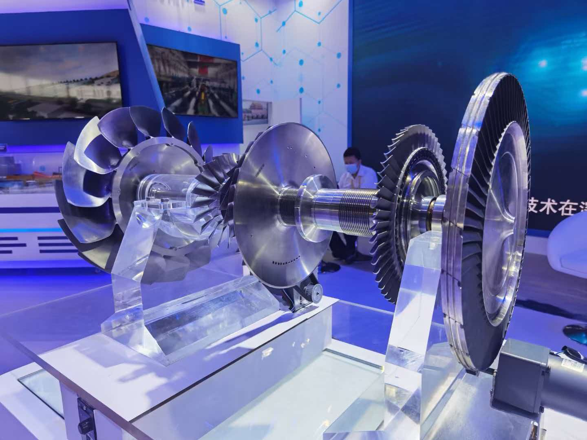

整机技术展示
涡轮混电发动机模型
低压轴：低压压气机 / 两台电机 / 低压涡轮
● 正在加载整机V2 / 1450 × 480 × 480 mm
旋转 · 缩放 · 点选部件
当前设备无法启动三维，请切换轴系与电气图。

低压内轴：正向高压外轴：反向燃气流路
动态展示
从发电机端看向排气端，以低压轴为正；两轴独立反转。动画非真实转速。
运行状态
起发电机为无风扇简化电机；前置发电机外径约 370 mm。起动带转仅示意，需验证匹配。
整机约束
mm长度 1450 ≤ 1500
宽度 480 ≤ 500
概念高度 480
发动机及主附件；独立推进模块不计入包络。非制造尺寸。
气动与机械架构
两级高压压缩，折流热端。
一级轴流与一级斜流压气机安装在高压外轴；贯通低压内轴驱动低压压气机、起发电机与前置发电机。环形折流燃烧室沿外围布置，燃气折返进入高压涡轮，再流经低压涡轮与波瓣尾喷管。燃烧室及导叶不旋转。
高压储能支路 / 低压辅助支路900 V：整流器、高压 DC/DC、电池、推进逆变器及电机风扇。270 V：起发双向 AC/DC、独立低压 DC/DC 与辅助系统。
轴系高低压 ≠ 母线高低压
电压为手绘方案值；电池接口、双向驱动器、低压电源、轴承及保护系统需后续设计。展示导出
导出当前整机视角或 8 秒动态画面。